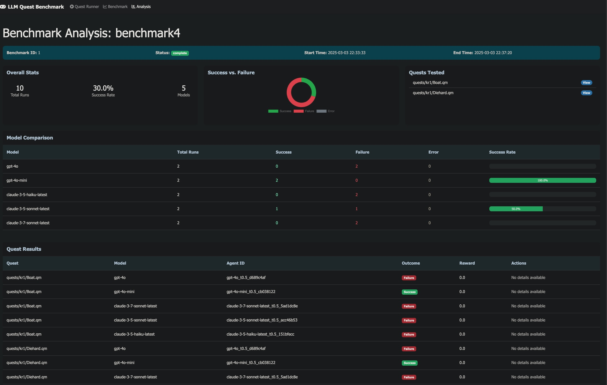

How much does the wrapper around a language model matter? We test five agent architectures on the same set of text-based decision tasks to find out.
Take a language model. Give it a text-based quest: read a situation, pick an action from a list, repeat for 10-50 turns until you win or lose. Now do the same thing five different ways: bare prompt, chain-of-thought reasoning, injected domain knowledge, a planning loop, and tool access. Does the scaffolding around the model change outcomes more than swapping the model itself?
That is what this benchmark measures. We run each model through the same quests with each architecture, and compare success rates, exploration patterns, and cost.
Most LLM benchmarks compare models on the same task. We compare agent architectures on the same model: five modes, six models, dozens of quests.
Each turn, the agent receives a text description of the current situation and a numbered list of possible actions. It must pick one. The quest engine advances the state, and the agent gets the next situation. This continues until the quest ends in success or failure.
Here is what a typical turn looks like:
Step 7 ================================================================================ You enter the trading post. Three merchants eye you from behind their stalls. A posted notice reads: "Warning: fuel prices fluctuate hourly." Status: Credits: 1,200 | Fuel: 40% | Reputation: Neutral Choices: 1. Buy fuel at current prices (580 cr) 2. Ask the merchants about cheaper fuel sources 3. Check the notice board for trade opportunities 4. Leave and try the next settlement
The quests range from straightforward (gather information, make safe choices) to adversarial (sliding puzzles, resource optimization under constraints, multi-step navigation with dead ends). Some require domain knowledge the model was never trained on. Some are solvable by any model with decent reading comprehension. The spread is what makes the benchmark useful.

The tasks are interactive fiction quests from the Space Rangers universe: a large corpus of community-authored text adventures with branching narratives, resource management, and non-obvious optimal paths. They were not designed for LLM evaluation, which is part of why they work well as one: the difficulty distribution is organic, not synthetic.
Properties that make these quests a challenging evaluation domain:
The quest corpus contains hundreds of scenarios. The benchmark selects a balanced subset covering four difficulty categories: spatial/grid puzzles, combinatorial optimization, long-horizon navigation, and domain-specific scoring. You can try the quests yourself in a browser.
The quest engine used in this benchmark is space-rangers-quest by roginvs, a TypeScript interpreter for the .qm quest format.
The benchmark's core contribution: each model is evaluated with five different cognitive architectures, from minimal to fully augmented.
Minimal prompt. The model sees the situation and action list, returns a number. No reasoning, no context. The control condition.
Structured reasoning scaffold: analyze the situation, weigh options, avoid common failure patterns. Returns analysis + choice in JSON.
Reasoning prompt plus domain knowledge: quest mechanics, common traps, strategy hints. Tests whether the right information unlocks otherwise-impossible quests.
Multi-turn planning agent. Generates a strategy, executes it, replans when circumstances change. Maintains strategic coherence across turns.
Agent with access to tools: state tracker, calculator, quest history. Can reason over structured data before committing to an action.
YAML Config Quest Engine (TypeScript)
+-----------------------+ +-------------------------+
| models: | | .qm quest file |
| - deepseek-v3.2 | | branching narrative |
| - gpt-5.4-mini | --> | state machine |
| - gemini-3-flash | | success/failure outcome |
| modes: [A, B, C, D, E]| +-------------------------+
| quests: [35 selected] | |
| runs_per_config: 3 | v
+-----------------------+ +-------------------------+
| Agent (Python) |
| prompt template |
| LLM API call |
| action selection |
| per-run telemetry |
+-------------------------+
|
v
+-------------------------+
| Leaderboard (JSON) |
| success rates |
| exploration rate |
| repetition rate |
| cost per run |
+-------------------------+
Everything is configured via YAML: model list, prompt templates, quest selection, runs per cell. A single command runs the full matrix and exports results as JSON for the leaderboard.
The benchmark targets mid-tier production models: the tier developers actually deploy, not frontier flagships. Six providers, ELO 1400-1475 range, keeping comparison fair within a capability class.
| Provider | Model | ELO | Input $/M | Output $/M |
|---|---|---|---|---|
| Gemini 3 Flash | 1474 | $0.50 | $3.00 | |
| OpenAI | GPT-5.4 Mini | 1458 | $0.75 | $4.50 |
| DeepSeek | V3.2 | 1424 | $0.26 | $0.42 |
| Mistral | Medium 3.1 | 1410 | $0.40 | $2.00 |
| Anthropic | Claude Haiku 4.5 | 1408 | $1.00 | $5.00 |
| Minimax | M2.5 | 1403 | $0.12 | $0.99 |
All accessed via OpenRouter. High-tier follow-up (Claude Sonnet 4.6, GPT-5.4, Gemini 3 Pro) planned separately.
See the README for setup and usage instructions. Supports Docker and local dev with uv. Adding a new model requires only a YAML config change.
This project is not affiliated with Elemental Games, SNK-Games, 1C Company, or the Space Rangers franchise. The quest files are community-authored content distributed separately from this benchmark.